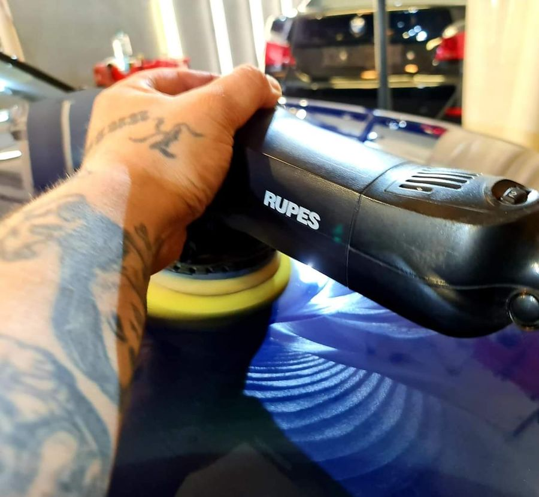
1 Step polish
Kleine krasjes verwijderen en de glans van de lak herstellen, in één polijststap.
Kleine krasjes + glansMeer info
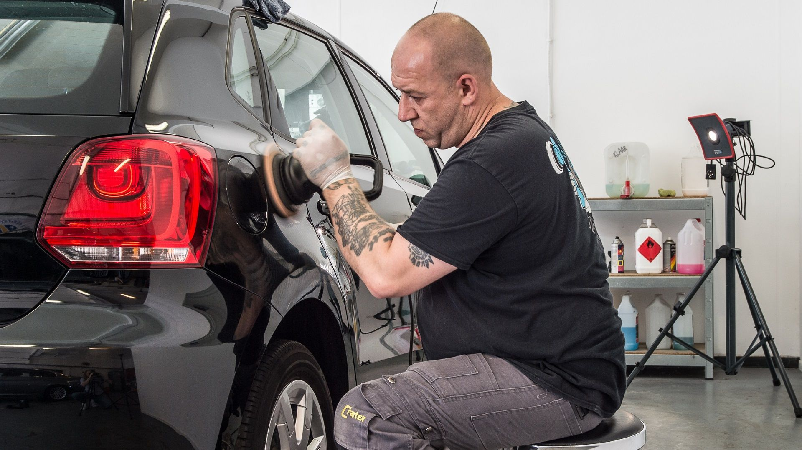
Polijsten, lakcorrectie en coatings voor auto's van elk merk en type, met als specialiteit het hogere segment. IDA-gecertificeerd, met meer dan 20 jaar ervaring.
Van glansherstel tot een volledige lakcorrectie met keiharde nanocoating. Alles in ons eigen Detailcenter in Breda.

Kleine krasjes verwijderen en de glans van de lak herstellen, in één polijststap.
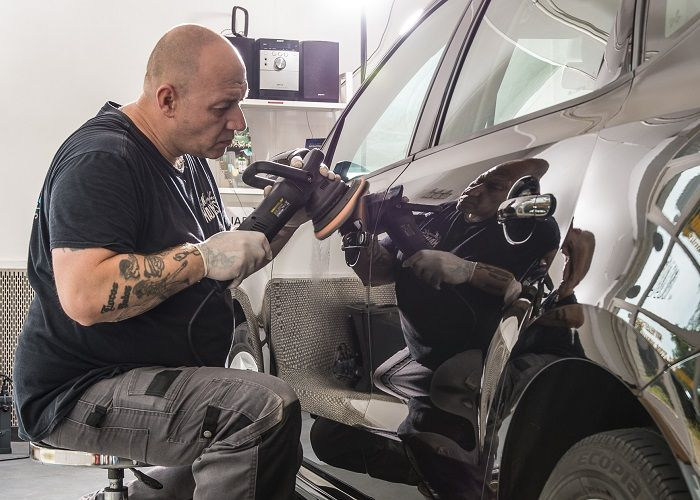
De fijnste én de grofste krasjes eruit in drie polijststappen, afgewerkt met wax.
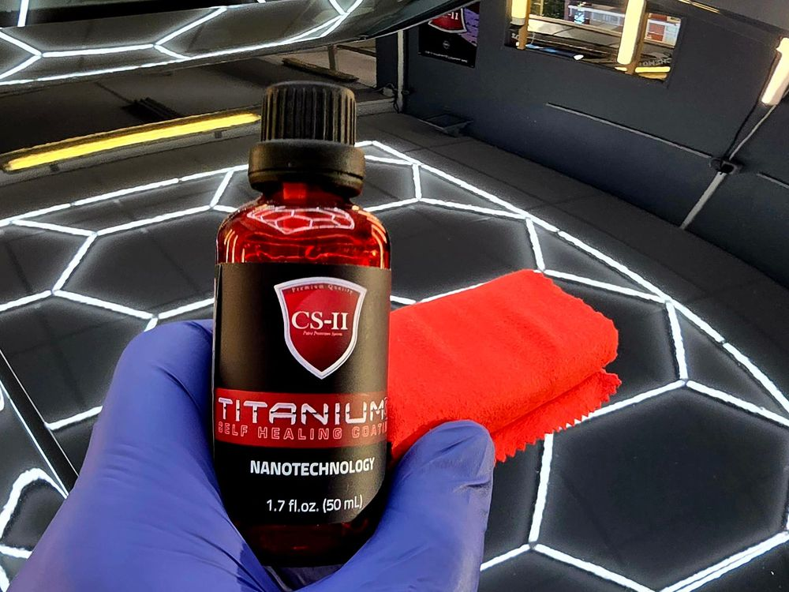
Alle oneffenheden en krassen weg, glansherstel en een keiharde nanocoating.
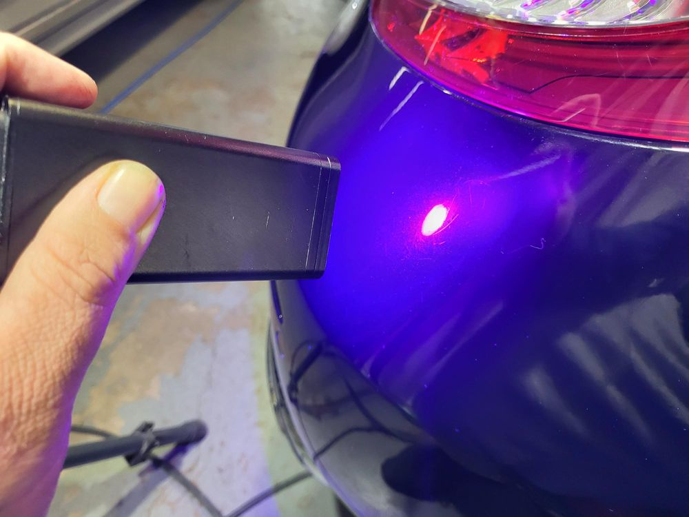
Krassen, steenslag en lichte lakschade plaatselijk herstellen met het PRSexpert-systeem.
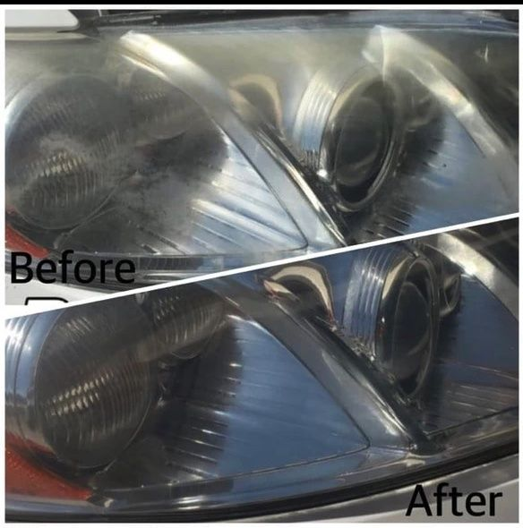
Doffe koplampen weer helder, zonder ze te vervangen.
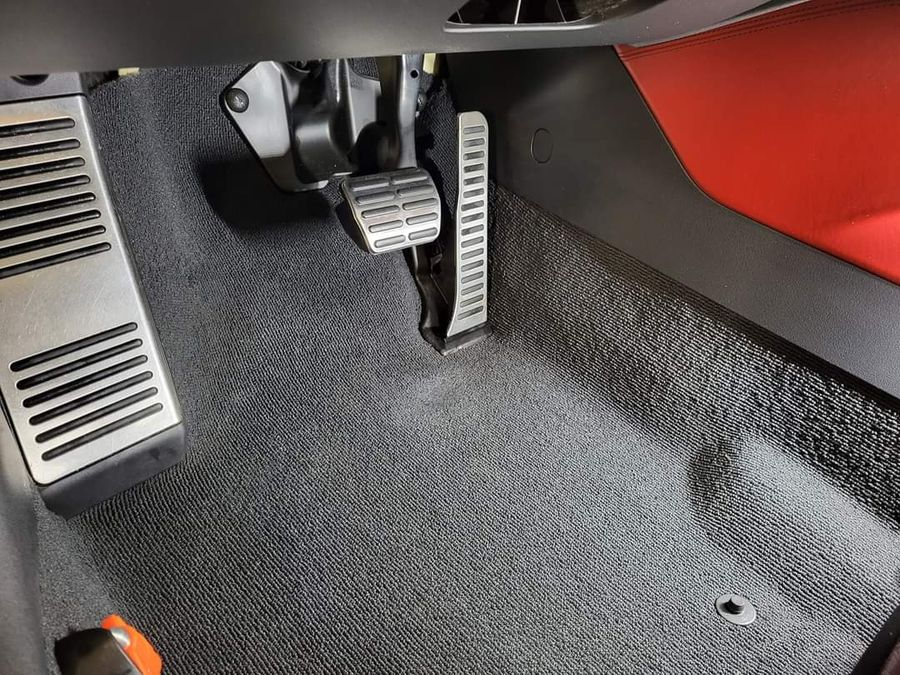
Uw interieur weer als nieuw: grondig gereinigd, gestofzuigd en desgewenst gecoat.
Krassen, doffe koplampen en lakschade. Zo ziet het eruit als we klaar zijn.
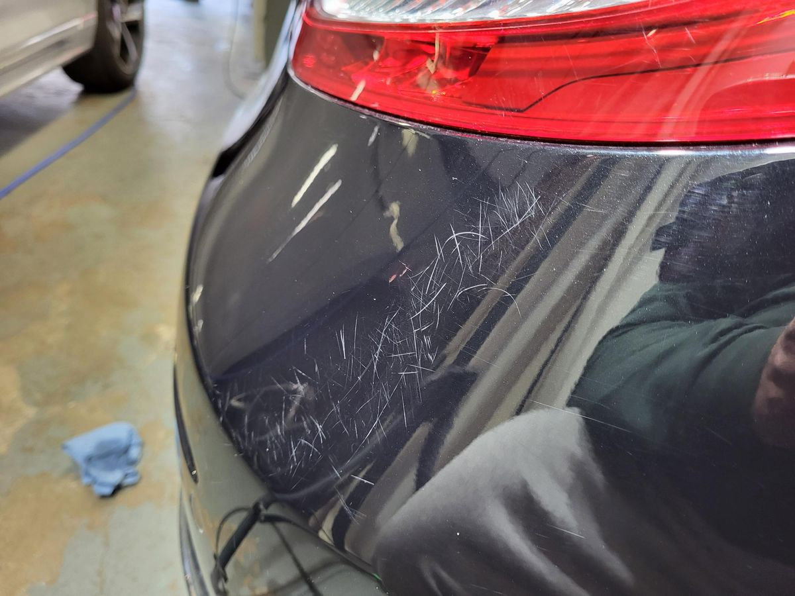
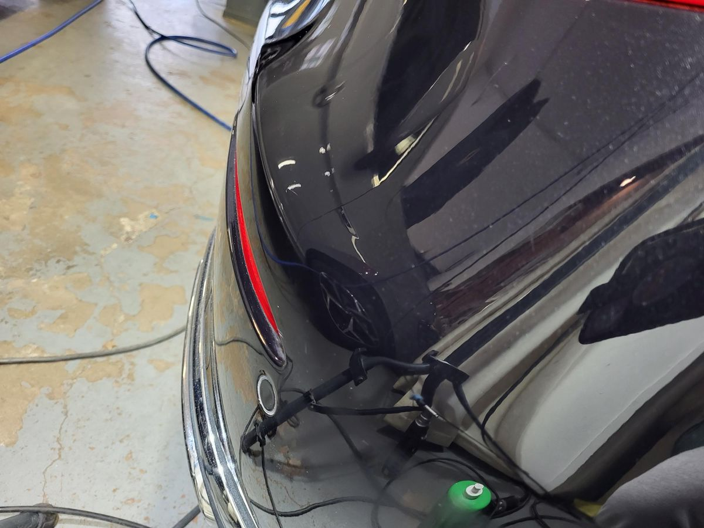
Zwarte lak vol krassen, na de lakcorrectie weer strak en glanzend.
Weer helder, zonder de koplampen te vervangen.
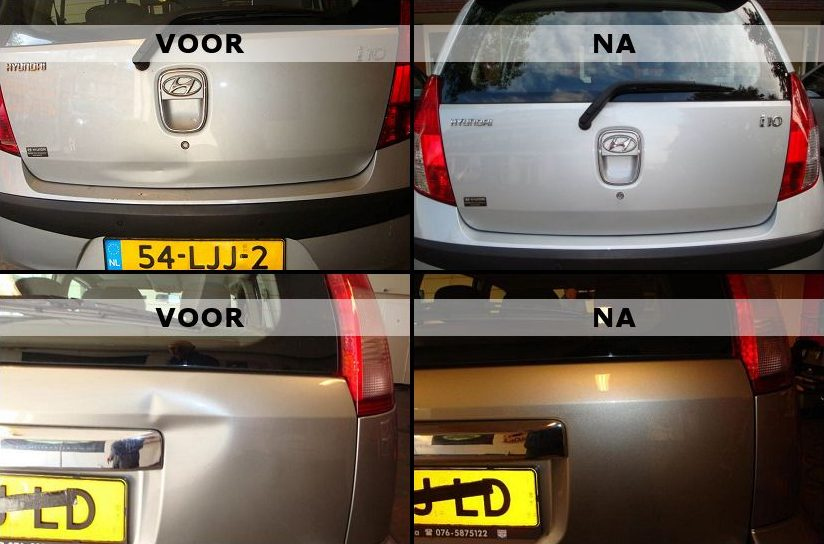
Krassen en lichte lakschade op achterklep en bumper hersteld.
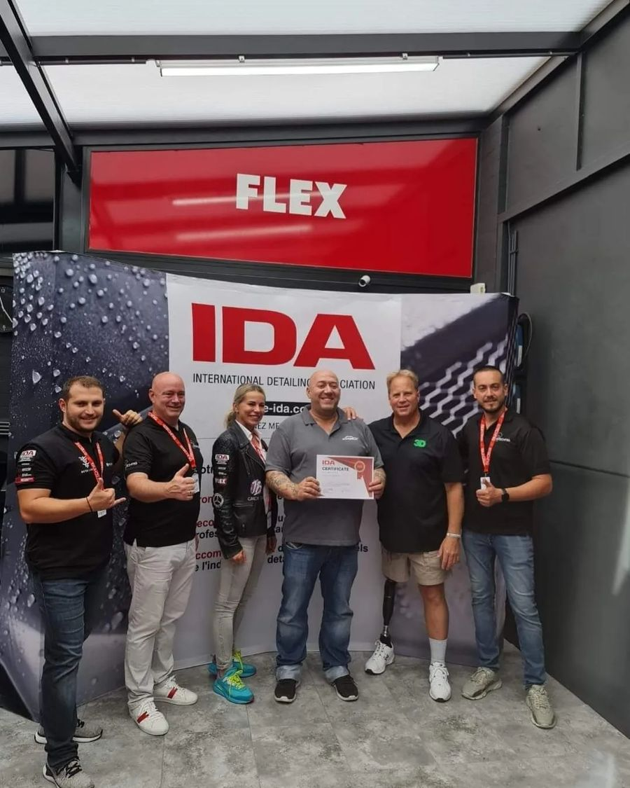
"Iedere auto en iedere lak is anders."
Breda Car Care is een IDA-gecertificeerde detailer, gespecialiseerd in het detailen en in optimale conditie houden van auto's uit het hogere segment. Uiteraard kunt u ook bij ons terecht voor het poetsen, wassen en detailen van auto's van elk merk en type.
Daarom kiezen we niet zomaar voor een standaardoplossing, maar voor de juiste aanpak voor het beste resultaat. Met een full option detailbehandeling brengen we uw auto terug naar het niveau van toen hij nieuw geleverd werd.
Vertel ons om welke auto het gaat en wat u wilt laten doen. We nemen zo snel mogelijk contact met u op.
U bent welkom in ons Detailcenter in Breda.